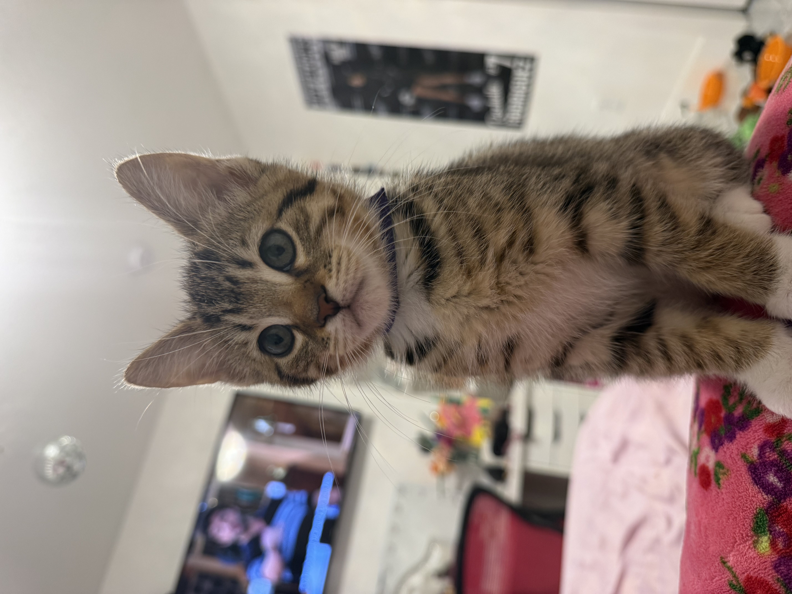
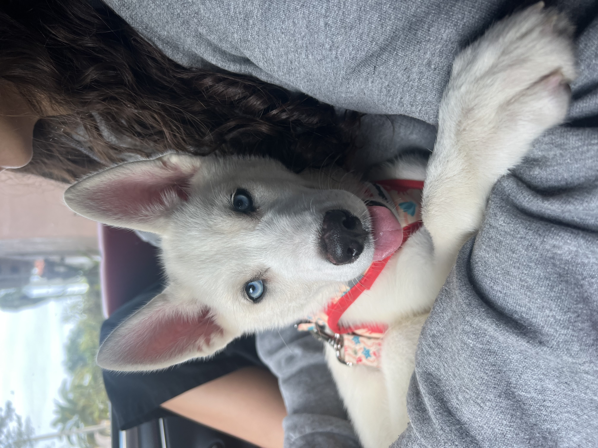
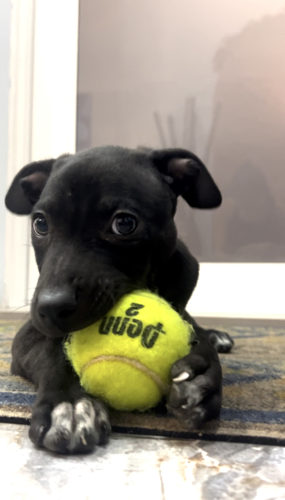

Ladybug was a sweet, loving cat I fostered for 2 months before she found a wonderful forever home. She was gentle, affectionate, and full of personality, and she quickly stole the hearts of everyone she met.
Florida shelter outcomes
Animal rescue alumni
Meet my foster babies. Fostering is one of the most rewarding parts of rescue work. It is a chance to nurse an animal back to health, help them feel safe, and build the trust they need to thrive. Watching a shy, frightened animal become more confident, playful, and social is a deeply meaningful experience. Every foster journey is different, but the goal is always the same: finding a loving home that truly fits the animal's needs, personality, and comfort level.

Ladybug was a sweet, loving cat I fostered for 2 months before she found a wonderful forever home. She was gentle, affectionate, and full of personality, and she quickly stole the hearts of everyone she met.

Celeste was a super shy pup I fostered for a month before she got adopted. She entered timid and uncertain, but by the time she left, she was playful, energetic, and full of personality.

Magic was one of those special cases that could not be adopted because he had a neurological disorder that disabled him. My experience fostering him was truly magical, and his gentle spirit left a lasting impact on me.

Boots was a little cat with a big personality. He was a foster fail and ended up becoming our class pet, bringing endless energy, charm, and personality to our home.